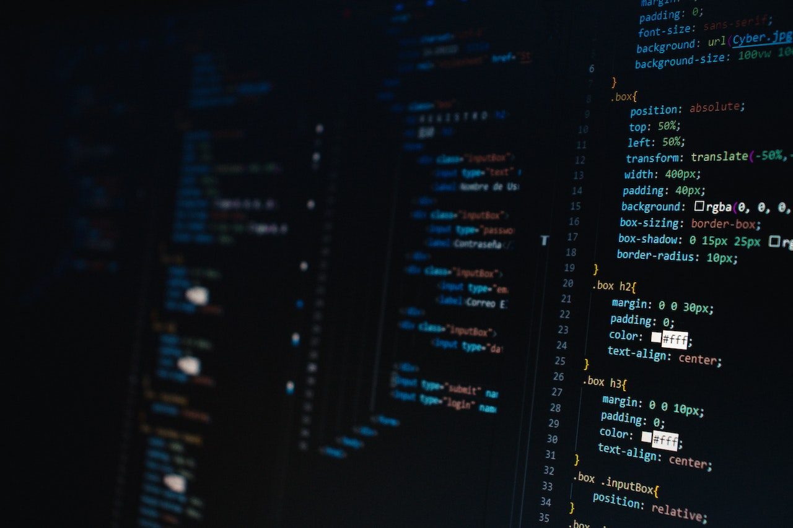

10 de janeiro de 2023
O início da jornada

Tive meu primeiro contato com program√ß√£o em 2017 quando comecei o curso t√©cnico em informática integrado no ensino m√©dio. Apesar de me interessar por program√ß√£o, n√£o estava totalmente convencida e entrei para outra área quando terminei o ensino m√©dio. At√© que no in√≠cio de 2023 voltei para a ar√©a de tecnologia e comecei a cursar Análise e Desenvolvimento de Sistemas. Esse √© um dos meus meus primeiros projetos e foi desenvolvido durante o evento NLW da Rocketseat, √© uma cápsula do tempo e nela pretendo adicionar momentos importantes durante a minha jornada üíú.